The controller-first Liquid Glass OSD: the real selected cluster live on the left (live dyno while the game is paused, live telemetry when it flows), a glass control panel on the right, five tabs on LB/RB. Extends the Phase 3 direction (OSD_DIRECTION.md). Spec: OSD.md.
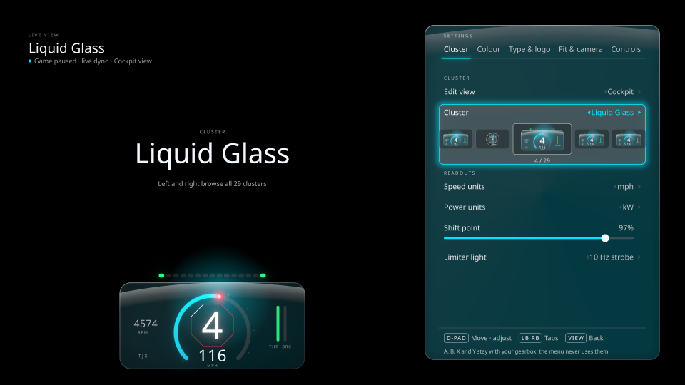
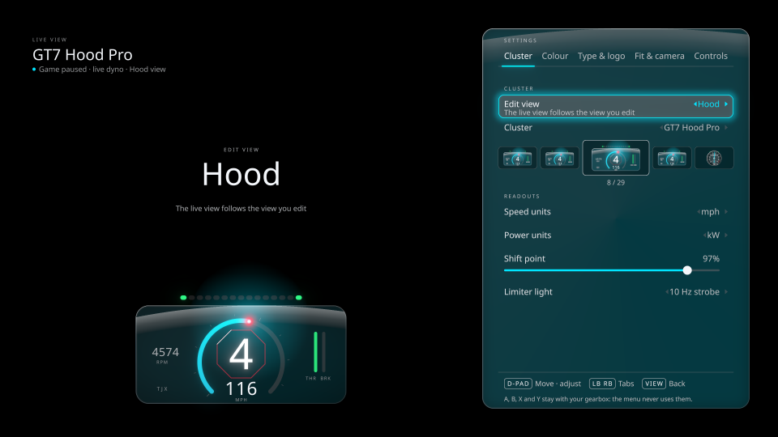
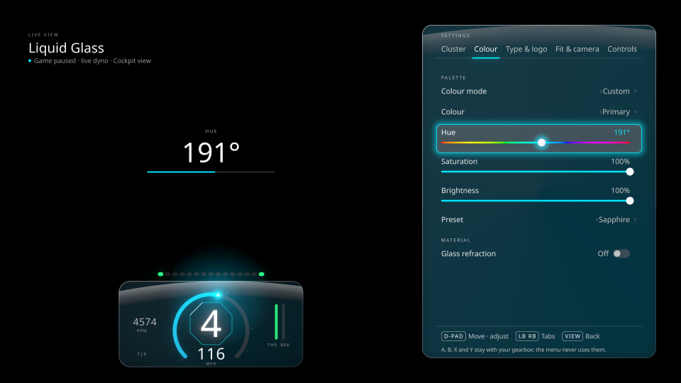
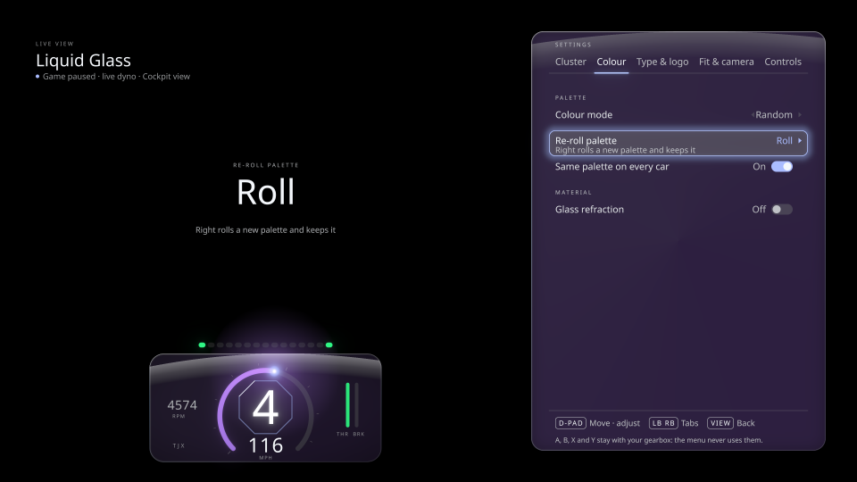
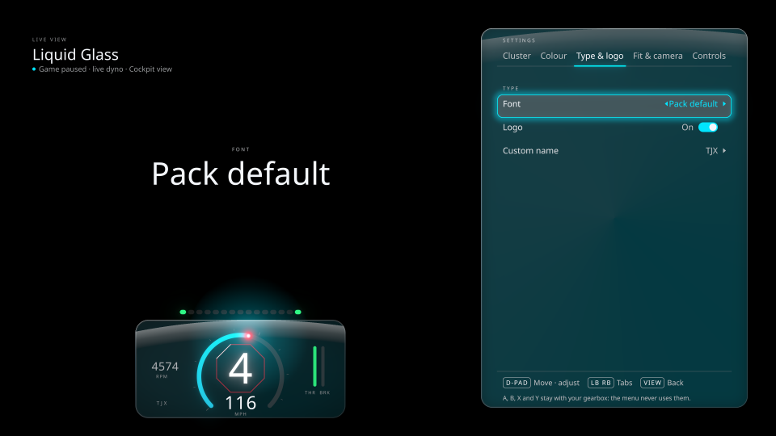
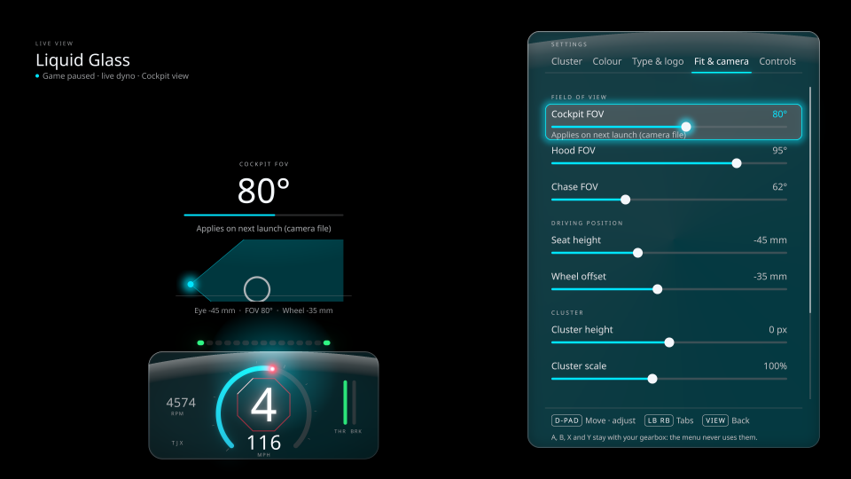
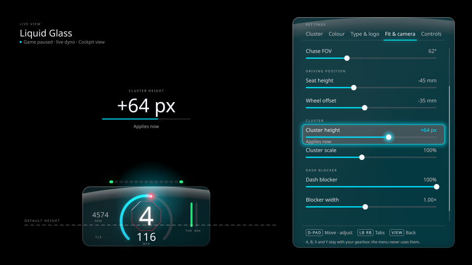
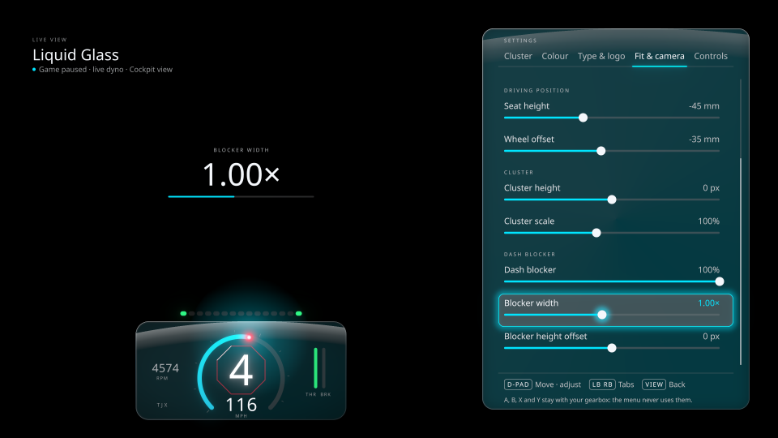
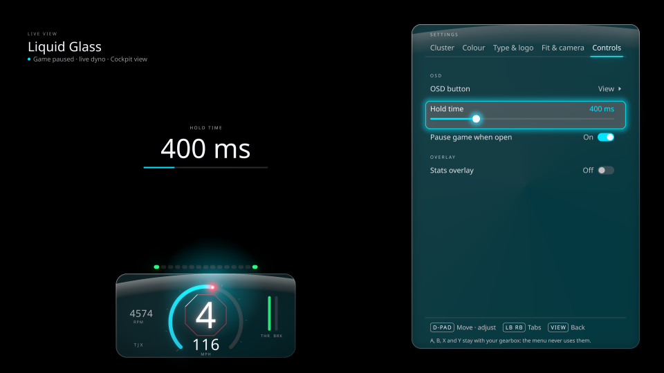
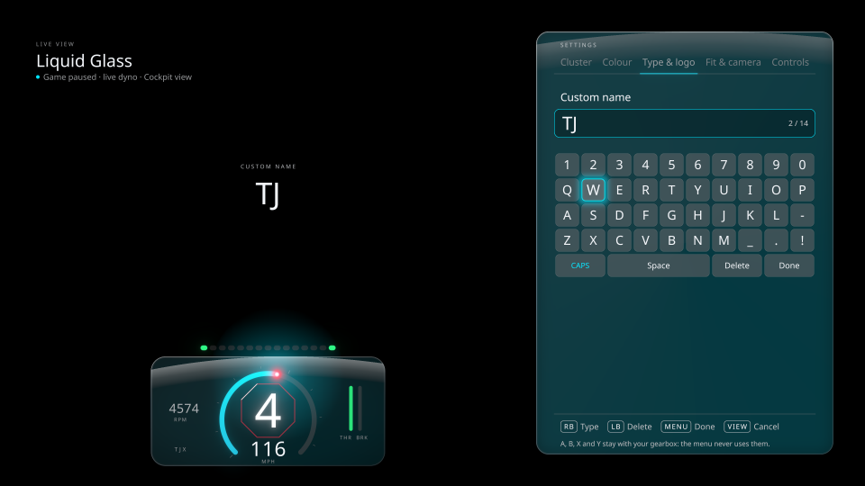
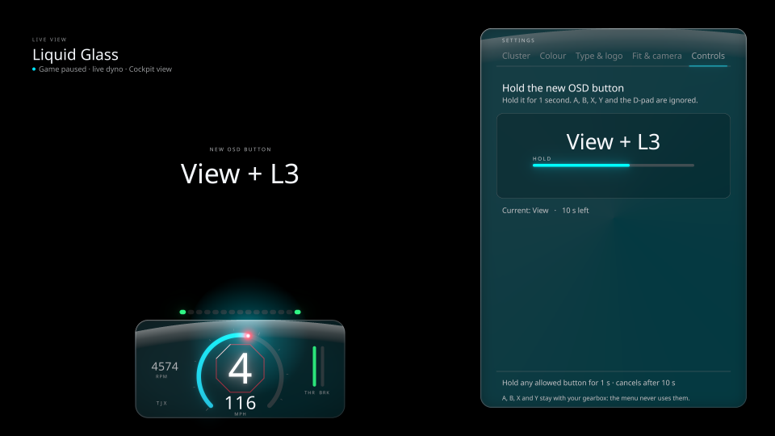
| Element | Value |
|---|---|
| Panel | x 2380–3700, y 140–2020, radius 56; right-aligned on wider screens. Glass tint alpha 64, frost 0.9, backdrop σ 28, crown sheen 28/255 ending above the tabs, OLED black 0.62 underneath. |
| Text edge / value edge | One left text edge at 2488; every value, slider track and toggle ends at 3552; chevrons in the gutter to 3592. |
| Tabs | Cap 30 (floor 26), y 276; accent underline 6 px on the fast spring, blooming. |
| Rows | 116 px (sliders 164, carousel 340, info 124); section headings 18 cap caps +24% tracking, 76 px above. Labels and values 30 cap; help 26 cap. |
| Focus | White 0.07 lift, 3 px accent inner rim in a bloom layer, glow σ 14. Accent = palette accent unless within 25° of the warning red, then primary, then sapphire. |
| Live zone | "LIVE VIEW" label, cluster name 54 cap, status 26 cap; focus echo: label 18 caps, value 110 cap, slider mirror 720 px, help 26 cap. Feathered black pools behind the echo (0.45) and the cluster (0.35). |
| Hint bar | Keycaps 22 cap in 52 px chips, text 26 cap at y 1896; the gearbox line 22 cap at 1972. |
| Dim | Kit underlay 0.62 black (applied in the resolve, free on the GPU). |
| Input | Browse | Keyboard | Remap |
|---|---|---|---|
| D-pad | Up/down move (wrap on a press, stop while held); left/right adjust, repeat 280 ms then 65 ms, 25 ms after 900 ms; sliders ×4 after 1.2 s, ×10 after 2.5 s | Move on the key grid | Ignored |
| LB / RB | Previous / next tab | Delete / type | Capturable (not alone) |
| View | Back (on release when it is the toggle button and held under the hold time) | Cancel | Capturable |
| Menu | Back | Done | Capturable |
| A B X Y | Never read: stripped before any input is seen (manual gearbox). | ||
Motion: open 200 ms (fade + 64 px slide), cluster glide to the live zone on the default spring, focus ring and underline on fast, scroll on default, 150 ms row crossfade on a tab change.